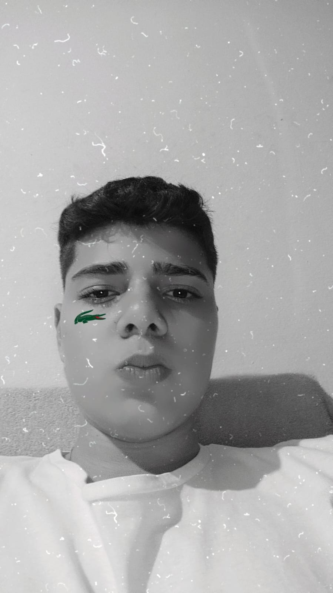

Vitor Francisco Ocon Ramos
Nasci em 2007 na santa casa de bariri, desde pequeno me interecei por tcnologia. estudo no sesi deis do fundamental, estou com 16 anos,
estou no segundo colegio fazendo curso no senai de desenvolvimento de sistema o que me sempre interesou estou gostando muito.
meu hob é jogar, asistir e ir a academia, tenho como inspiraçao meu personal, e gosto muito do loud victor. tenho como apelido Francisquinho do mal.
Email: senaivitro899@gmail.com
Tel: (14) 99743-3412
Endereço: Rua 7 de setembro Bairro: Centro